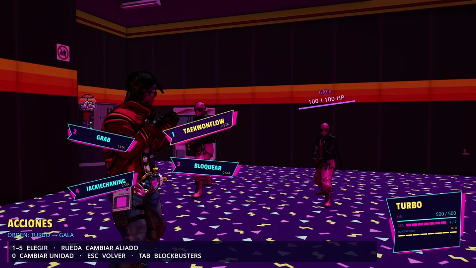
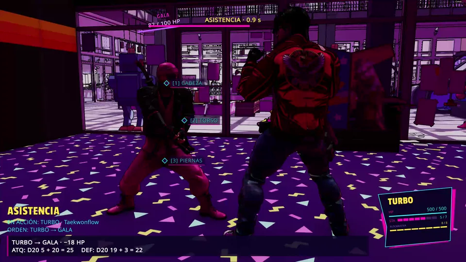
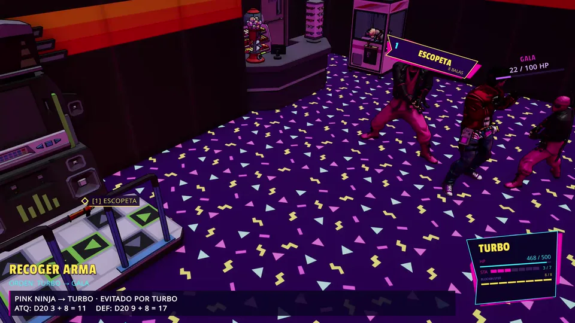
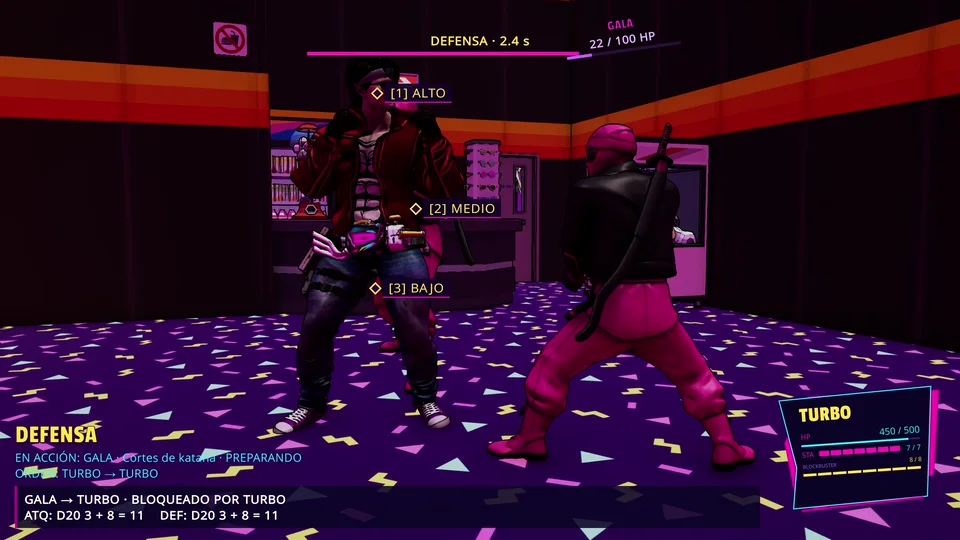

COMMAND BATTLES
Choose meaningful actions from combat commands and cassette sets; positioning and timing affect the next exchange.
SHAMPOO ARCADE / TACTICAL ACTION
THINK THE FIGHT. DIRECT THE CHAOS.
A neon-drenched tactical action game where every command, counter and interception changes the fight. Anime-style clashes meet a cassette-driven combat system in a wild retro arcade world.

Not a conventional brawler. You're directing actions and reading the response, one exchange at a time.
Choose meaningful actions from combat commands and cassette sets; positioning and timing affect the next exchange.
Cassette-driven attacks confront an opponent's innate defense. The confrontation matters more than a decorative attack stat.
Select target areas during a confrontation. The tactical interface stays tied to actual enemies and actions.
Attack, react, block and intercept: decisions are connected instead of being isolated button presses.
Anime-inspired poses, impactful hits and action-directed cameras are part of the visual direction. Animation and camera work remain in development.
The framework supports units, allies and enemies in tactical confrontations, with VS at the center of the design.
ACTION / REACTION / INTERCEPTION
Taek-Won-Cop Turbo's combat direction is built around Acción–Reacción–Intercepción. Combat time becomes a resource: choose an action, observe the opposing response and find the opening to counter or intercept. The result is a fight you can read, not a barrage of random moves.
Real captures from the latest working Unity build. Interface, effects, cameras and animations may change during development.



BUILD NOTE / These are development captures, not a finished-release trailer. Current systems and visual polish are subject to revision.
The larger design combines confrontations with characters, extra modes and an unmistakable arcade identity.
CORE DIRECTION / VERSUS
Duels, team dynamics and readable tactical decisions drive the project. AI sparring currently helps test the VS combat framework.
A countdown-driven sign clash, built around a quick decision rather than a long telegraphed animation.
A collectible card side game with directional values, deck building and tactical board play.
Taek-Won-Cop Turbo is an actively developed Unity PC project. Features shown here are part of a work-in-progress build; this page does not announce a commercial release or public playtest.